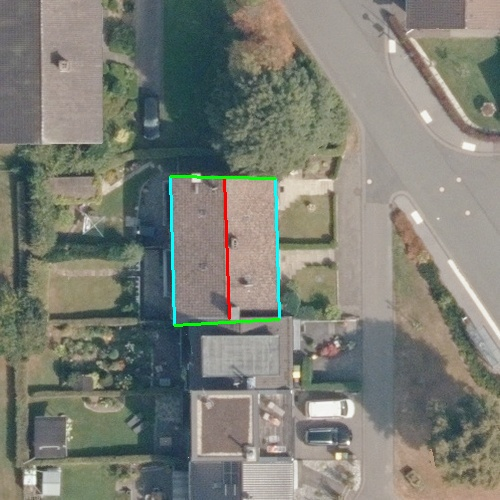
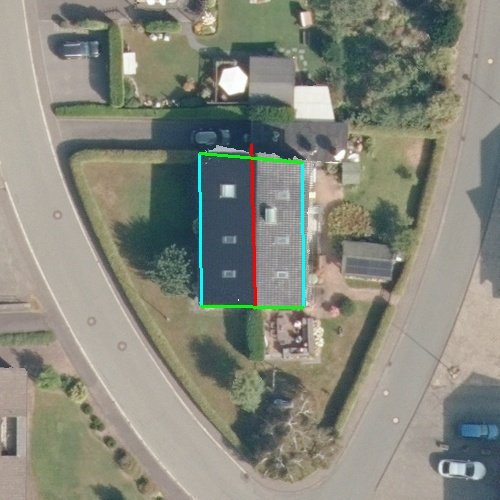

2026 · Case study
Open Roof Measurement
Measuring a roof from an address and open geodata, so that owners and roofers can get to a quote without a site visit.

Buildings cause a large share of final energy demand, and the roof is where much of a house's heat is lost. Insulating it during a renovation is one of the most effective measures, and it is also the moment to add solar. In practice the process often stalls at the first step: to get a quote, someone has to measure the roof, which means a site visit, a drone survey or an estimate from the ground.
This project asks whether that first step can be automated. From a street address alone, the pipeline estimates the roof geometry using only open public data from North Rhine-Westphalia: 10 cm aerial images, a 0.5 m elevation model and the cadastre. No paid APIs. A web tool lets a person check and correct the result before it goes to a roofer.
Highlights
- SAM segmentation for the roof mask, RANSAC plane fitting for pitch and area, and RoofMapNet for ridges, eaves and verges.
- SegFormer fine-tuned on the RID2 dataset (3,813 training images) to detect PV panels, dormers, skylights and chimneys.
- Four-tier building detection with fallbacks for shadows, trees and shared walls.
- Validated on three houses against their building plans. On a compact terraced house all roof-edge metrics are within 7 % of the plan.
Limitations
- There is no real training data for German houses. RoofMapNet was pretrained on 9,576 buildings from China, New Zealand, the US and Austria; German pitched gable roofs, terraced and semi-detached houses and half-hipped variants are absent. On the detached test house this shows as a 16 % ridge overestimate and a 15 % verge underestimate, a textbook case of distribution shift.
- On the semi-detached house the segmentation pulls in part of the neighbour's roof, so the area is overestimated and the pitch comes out 27 % too high.
- Validation covers only three houses, and the superstructure model was fine-tuned for 14 epochs on a free Colab GPU. The numbers show where the approach works, not that it is production-ready.

